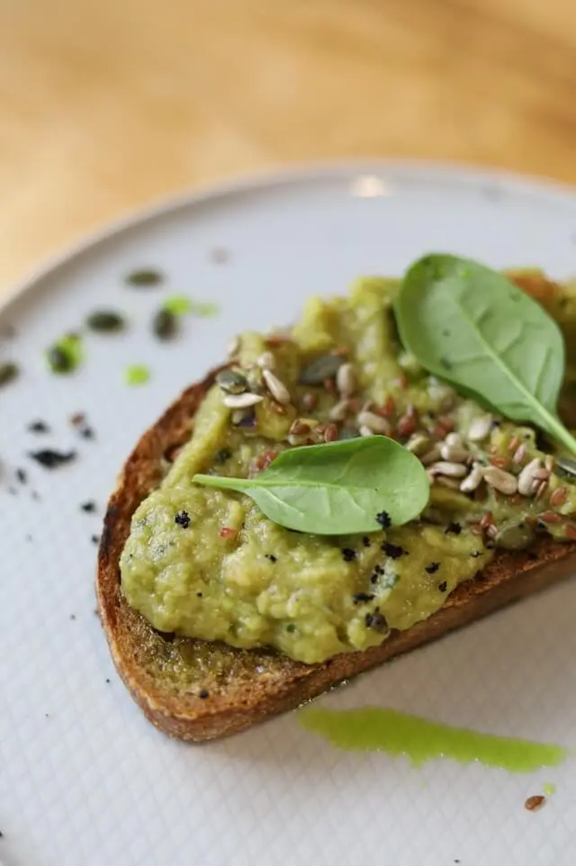

Veggie wrap
Vår fräscha Veggie Wrap är en läcker kombination av färska grönsaker, krispiga gröna blad, krämig hummus och smakrika avokado, insvept i en mjuk tortillabröd. Perfekt för en lätt lunch eller en snabb middag, denna hälsosamma wrap är både mättande och full av smak, och passar utmärkt för alla som vill njuta av en god måltid utan kött.

Avocado toast
Avocado toast är en enkel och läcker maträtt som är perfekt för en snabb frukost, lunch eller mellanmål. Detta populära recept innebär att du mosar mogen avokado och breder den på rostat bröd, vanligtvis surdegs- eller fullkornsbröd. Toppa med dina favorittillbehör som färsk tomat, krossad rödpeppar, färsk koriander, eller en nypa flingsalt och svartpeppar för extra smak. Avocado toast är inte bara otroligt läckert, det är också rikt på nyttiga fetter och fibrer, vilket gör det till ett näringsriktigt val för en balanserad kost.